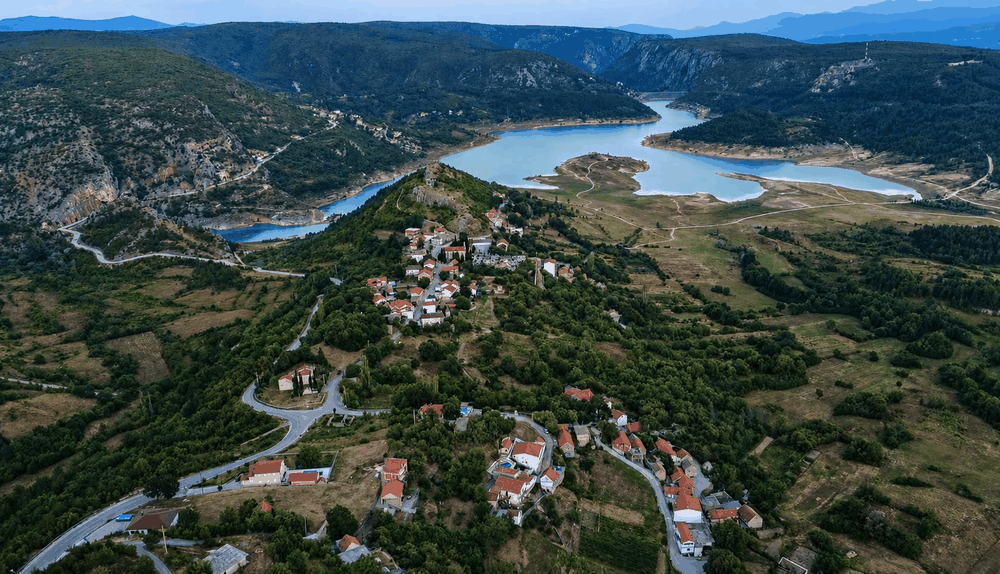
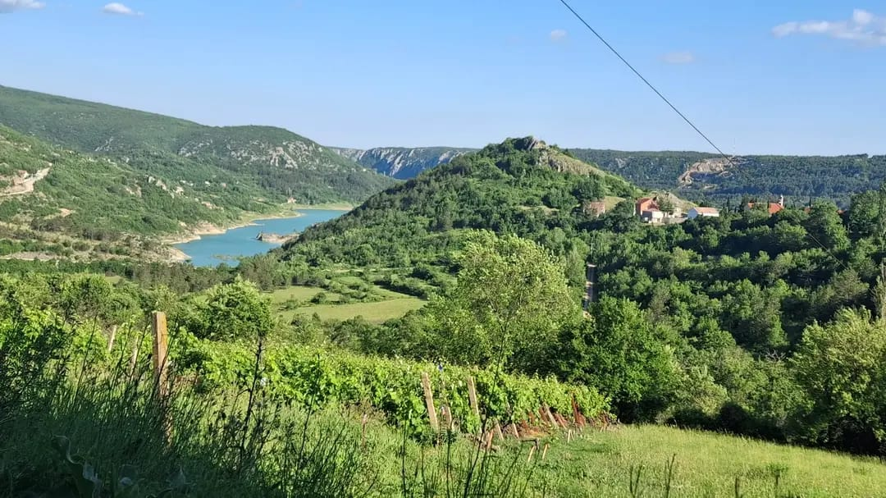

Migracije i rasprostranjenost roda Tandara
Uvod
Ovo poglavlje prati kretanje pojedinih grana roda Tandara nakon njihova oblikovanja u matičnom području. Umjesto ponavljanja povijesti nastanka prezimena, naglasak je na smjerovima preseljenja, razdobljima u kojima se ona mogu pratiti i mjestima u kojima su nastajala nova obiteljska središta.
Ričice ostaju početna točka ovoga prikaza, a svako kasnije mjesto promatra se kao dio migracijskog puta koji treba povezati s konkretnom obiteljskom granom i dostupnim izvorima.
Ričice – ishodište roda
Najstarije pouzdano poznato središte roda jesu Ričice u Imotskoj krajini. Upravo se ovdje tijekom prve polovice 18. stoljeća može pratiti razvoj obitelji iz koje su nastale kasnije grane roda.
Ričice su tijekom stoljeća bile više od mjesta stanovanja. One predstavljaju ishodišnu točku iz koje su se pojedini članovi obitelji postupno raseljavali prema okolnim područjima, zadržavajući svijest o zajedničkom podrijetlu.
Ričice kroz godišnja doba i različite perspektive



Širenje unutar Imotske krajine
Tijekom 18. i 19. stoljeća broj članova roda postupno se povećavao. Kako su nastajala nova kućanstva, dio obitelji selio se u obližnja mjesta, tražeći obradivo zemljište, mogućnost osnivanja vlastitoga doma ili bolje gospodarske uvjete.
Takve migracije bile su uobičajene za gotovo sve obitelji Imotske krajine i predstavljale su prirodan nastavak demografskog razvoja.
Širenje prema Zavelimu, Tomislavgradu i Livnu
Prvo pouzdano širenje prezimena Tandara izvan Ričica povezano je s područjem Zavelima, prostranim krajem koji obuhvaća desetak sela. Među njima se nalazi i selo Tandara, nazvano po prvim doseljenicima iz Ričica – pripadnicima roda Tandara.
Između 1806. i 1819. godine započela je izgradnja prvih kuća na tom prostoru te postupno preseljenje dviju obitelji iz Ričica. Prema obiteljskom predanju i dosadašnjim istraživanjima, radilo se o obitelji Ante Antina, začetnika Lovrine, a kasnije i Križanove grane, te o obitelji Martina Petrova, začetnika Tomine grane i loze Tromića. Njihovim dolaskom oblikuje se zavelimska grana roda Tandara, izravni nastavak izvorne ričičke loze.
Zavelimska grana imala je ključnu ulogu u očuvanju prezimena, obiteljskog identiteta i trajne povezanosti s ričičkim korijenima. Doseljenjem ovih obitelji stvorena je nova životna jezgra roda iz koje su se kasnije razvile dodatne obiteljske linije.
Drugo širenje roda Tandara najvjerojatnije je vodilo prema području Tomislavgrada. Iz tog su se prostora pojedine obitelji preselile u Livno, gdje i danas žive njihovi potomci. O livanjskim Tandarama bit će obrađeno posebno poglavlje pod nazivom Livanjske Tandare.
Iseljavanje u Europu
Druga polovica 20. stoljeća donijela je novi val migracija. Gospodarske prilike dovele su do odlaska brojnih obitelji na privremeni ili trajni rad u zapadnoeuropske države.
Najviše iseljenika nastanilo se u:
- Njemačkoj
- Austriji
- Švicarskoj
- Ujedinjenom Kraljevstvu
Premda su ondje stvarali nove domove, većina je zadržala snažnu povezanost s rodnim krajem, redovito posjećujući Ričice i održavajući obiteljske veze.
Prekomorske migracije
Pojedini članovi roda tijekom 20. stoljeća iselili su i u prekooceanske zemlje. Najčešća odredišta bila su:
- Sjedinjene Američke Države
- Kanada
- Australija
U novim sredinama obitelji su nastavile njegovati hrvatski identitet, običaje i svijest o vlastitom podrijetlu.
Rasprostranjenost roda Tandara kroz vrijeme
Priča o Tandarama u Ričicama počinje vrlo skromno. Kada je 1725. godine u Netrubu zabilježena prva poznata obitelj Tandara, odnosno Tandarić, činila su je svega tri člana. Iz te male obiteljske jezgre tijekom sljedeća tri stoljeća razvio se rod čiji su se potomci postupno širili iz Ričica prema drugim dijelovima Hrvatske, susjednim područjima i, naposljetku, državama diljem svijeta.
Već 1806. godine u Ričicama su živjele tri obitelji Tandara s ukupno 20 članova, a petnaestak godina poslije u Ričicama i Zavelimu zabilježene su četiri obitelji s 27 članova. Rast broja potomaka pratio je i postupno širenje prema novim mjestima, najčešće u potrazi za zemljom, poslom i boljim životnim uvjetima.
Posebno vrijedan presjek daje stanje iz 1948. godine. Tada je u Hrvatskoj zabilježena 21 obitelj Tandara sa 107 članova, raspoređenih na devet lokacija. Najviše ih je još uvijek živjelo u Ričicama — 12 obitelji i 69 osoba — dok su druge obitelji već bile nastanjene u Zagrebu, Splitu, Kutjevu, Podravskoj Slatini, okolici Bjelovara, Đakova i na drugim mjestima.
Tablica 1: Tandare u Hrvatskoj 1948.
| Mjesto | Broj obitelji | Broj članova |
|---|---|---|
| Bektež kod Kutjeva | 1 | 5 |
| Kutjevo | 1 | 4 |
| Martinec kod Čazme | — | 2 |
| Podravska Slatina | 1 | 8 |
| Prgomelj kod Bjelovara | 1 | 8 |
| Ričice | 12 | 69 |
| Split | 1 | 1 |
| Strizivojna kod Đakova | 1 | 5 |
| Zagreb | 3 | 5 |
| Ukupno | 21 | 107 |
Šezdeset godina poslije slika se znatno promijenila. Prema podacima za 2008. godinu, u Hrvatskoj su evidentirane 104 obitelji Tandara s ukupno 317 članova, raspoređene na 32 mjesta. Zagreb je tada imao 24 obitelji i 73 člana, Ričice 8 obitelji i 35 članova, a Split 11 obitelji i 35 članova. Podaci pokazuju da je nekadašnja izrazita koncentracija roda u matičnom području tijekom 20. stoljeća prerasla u široku rasprostranjenost po Hrvatskoj.
Tablica 2: Tandare u Hrvatskoj 2008.
| Mjesto | Broj obitelji | Broj članova |
|---|---|---|
| Bektež kod Kutjeva | 2 | 3 |
| Bjelovar | 5 | 13 |
| Drnje | 1 | 2 |
| Dugo Selo | 1 | 2 |
| Đakovo | 7 | 22 |
| Gornji Karin kod Obrovca | 1 | 1 |
| Imotski | 1 | 3 |
| Ivanec | 1 | 3 |
| Kamen kod Splita | 1 | 3 |
| Kaštel Stari | 2 | 5 |
| Klokočevac | 3 | 11 |
| Kozinščak kod Dugog Sela | 1 | 5 |
| Križevci | 1 | 4 |
| Kutjevo | 2 | 7 |
| Nuštar | 1 | 1 |
| Podstrana | 3 | 11 |
| Predavac | 9 | 25 |
| Punat | 1 | 2 |
| Ričice | 8 | 35 |
| Rijeka | 1 | 1 |
| Sesvete | 1 | 3 |
| Sisak | 2 | 5 |
| Slatina | 1 | 1 |
| Slavonski Brod | 1 | 1 |
| Split | 11 | 35 |
| Stinica kod Senja | 1 | 2 |
| Stobreč | 5 | 20 |
| Strizivojna | 2 | 5 |
| Vinkovci | 1 | 4 |
| Vrpolje | 1 | 4 |
| Vukovar | 2 | 5 |
| Zagreb | 24 | 73 |
| Ukupno | 104 | 317 |
OpenStreetMap 2: Rasprostranjenost obitelji Tandara u Hrvatskoj 2008.
Kliknite na marker mjesta. U zagradi su prikazani broj obitelji i broj članova prema tablici iz 2008. godine.
Prema podacima kojima projekt raspolaže za 2026. godinu, samo u Hrvatskoj živi više od 105 obitelji Tandara s više od 330 članova. Istodobno se procjenjuje da izvan Hrvatske danas živi približno isti broj Tandara kao i u Hrvatskoj. Ta procjena obuhvaća potomke i obiteljske grane raseljene u više država te je treba promatrati kao radnu procjenu, jer za sve zemlje ne postoje jednako potpuni i usporedivi službeni podaci.
OpenStreetMap 3: Današnja rasprostranjenost roda Tandara izvan Hrvatske
Karta prikazuje samo lokacije i države koje su navedene u trenutačno dostupnim rodoslovnim HTML podacima za hrvatski rod Tandara. Kada je poznat grad ili selo, marker je postavljen na tu lokaciju. Kada je poznata samo država, marker je postavljen približno u njezino geografsko središte.
Brojevi uz markere nisu službeni popis stanovništva, nego radno stanje izvedeno iz trenutačno prikupljenih rodoslovnih podataka. Ondje gdje iz podataka nije moguće pouzdano utvrditi broj obitelji ili članova, to je u markeru izričito navedeno umjesto da se broj pretpostavlja.
Rumunjske i slovačke Tandare nisu uključene u ovu kartu, jer dosadašnja istraživanja nisu potvrdila zajednički korijen i rodoslovno podrijetlo s hrvatskim rodom Tandara. Isto tako, australski toponimi, hoteli i drugi nazivi „Tandara” nisu dio ove karte; australski marker odnosi se isključivo na Australiju kao zabilježeno odredište iseljavanja pripadnika hrvatskog roda.
Ove brojke ne govore samo o demografskom rastu. One pokazuju i migracijski put jednoga roda kroz tri stoljeća: od jedne tročlane obitelji u Netrubu, preko postupnog širenja unutar Hrvatske, do današnjih generacija koje žive u različitim državama i na različitim kontinentima. Svaka nova lokacija na toj karti predstavlja novu obiteljsku priču, novu granu i nastavak zajedničkog korijena.
Od tri člana jedne obitelji 1725. godine do više stotina potomaka tri stoljeća poslije — taj kontinuitet i rasprostranjenost najbolje pokazuju koliko su migracije oblikovale današnju sliku roda Tandara.
Izvori za povijesne tablice: Leksik prezimena Socijalističke Republike Hrvatske, Zagreb, 1976. (stanje 1948.); Franjo Maletić i Petar Šimunović, Hrvatski prezimenik: Pučanstvo Republike Hrvatske na početku 21. stoljeća (stanje 2008.). Podaci i procjena za 2026. temelje se na trenutačno prikupljenim podacima projekta.
Kako se migracijski trag provjerava
Samo pojavljivanje istoga prezimena u novom mjestu nije dovoljno da bi se dokazala pripadnost određenoj grani. Za pouzdanije povezivanje promatraju se obiteljske veze, slijed naraštaja, mjesta rođenja i vjenčanja, obiteljska predaja te drugi dostupni zapisi.
Zbog toga se na karti i u tekstu razlikuju dokumentirani pravci preseljenja od smjerova koji još predstavljaju istraživačku pretpostavku.
Današnja povezanost raseljenih grana
Današnje komunikacije omogućuju da se potomci udaljenih grana ponovno povežu, razmijene fotografije i dokumente te usporede obiteljske podatke. Takvi kontakti mogu pomoći u popunjavanju praznina koje u starijim arhivskim izvorima nije moguće riješiti samo iz jednog mjesta.
Zaključak
Migracije roda Tandara mogu se promatrati kao niz povezanih putova koji polaze iz Ričica i vode prema susjednim područjima, drugim dijelovima Hrvatske, Bosni i Hercegovini, zapadnoj Europi i prekooceanskim državama.
Ova stranica zato ne služi kao drugo rodoslovlje, nego kao geografski sloj obiteljske povijesti: pokazuje kamo su se pojedine grane kretale i koje je veze još potrebno potvrditi dodatnim dokumentima.